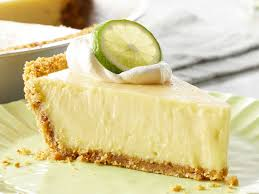

home
Key lime pie Recipe

Description:
No bake Key Lime pie - easy and sooo goood! Vanilla extract may be substituted with lemon extract.
Ingredient List:
- Graham cracker crust
- Cream cheese
- Low-fat sweetened condensed milk
- Lime Juice
- Grated lime zest
- Salt
- Heavy cream (chilled)
- Vanilla extract
- Sugar
Steps:
Lime Filling:
- Whip the cream cheese in a large mixing bowl until fluffy.
- Add the condensed milk, lime juice, lime rind, and salt.
- Whip the mixture until smooth.
- Pour the mixture into the graham cracker crust.
- Cover he bowl with plastic wrap and chill thoroughly.
Topping
- In a medium bowl, whip the cream until soft peaks form.
- Add the vanilla (or lemon) extract and confectioners' sugar.
- Continue whipping until stiff peaks form.
- Transfer the topping into a fine-mesh sieve placed over a bowl to allow drainage.
- Cover the topping tightly with plastic wrap and let drain for 2 hours.
Before Serving
- Discard any liquid that has drained from the topping.
- Spread the topping over the chilled pie.